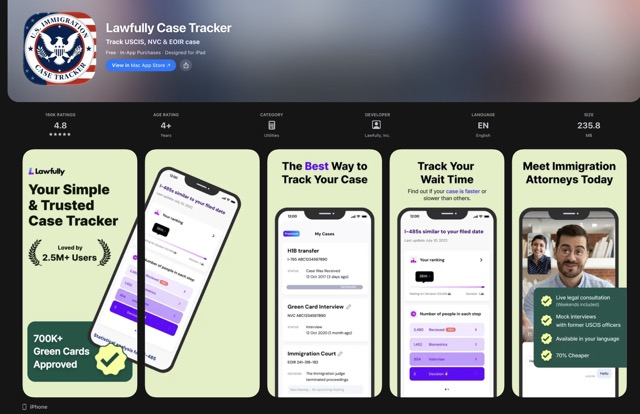
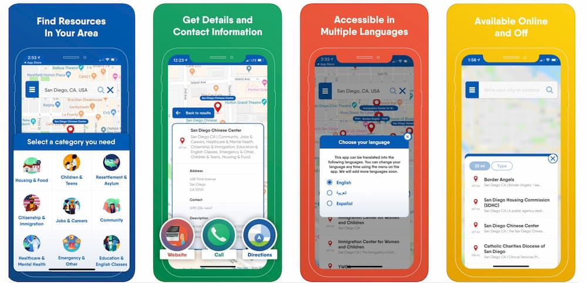

Capstone Comparative Analysis
Lawfully App

http://lawfully.com/
https://apps.apple.com/us/app/lawfully-case-tracker/id1435063223
https://www.youtube.com/watch?v=G54RTEKRXU8&t=4s
Lawfully is an app that helps immigrants track immigration cases and gather legal information in an accessible manner. The interface is visually organized with cards, progress tracking, and sections that simplify information that is often complicated to understand. The information is broken down into more manageable sections for users to better digest and understand. This is useful to my capstone because it allows me to see ways that I can make my interface user-friendly, organized, and accessible.
FindHello

https://usahello.org/findhello/
https://www.youtube.com/watch?v=louVAfHoGZg
Find Hello was an app that focused on being a resource-based platform for immigrants and refugees to locate services and resources in their communities, such as healthcare, legal support, language, and housing. The app's interface was colorful and had large icons to make it easy to navigate, as well as a multilingual system that allowed users to switch the app to their native languages. This app’s focus seems to have been clarity and accessibility to users who feel stressed during their immigration journey. I think this is a great competitive app for me to reference for my capstone because it shows how design can be a way of guidance, accessibility, and support for immigrants through a cleaner, more organized, and simplified human-centered user experience.